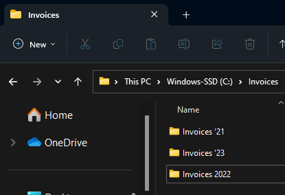
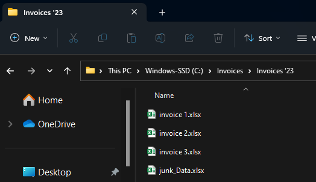
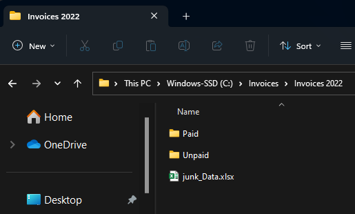
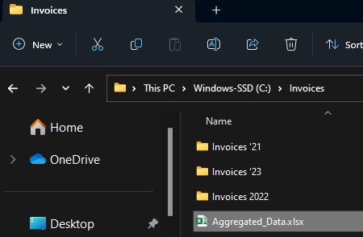
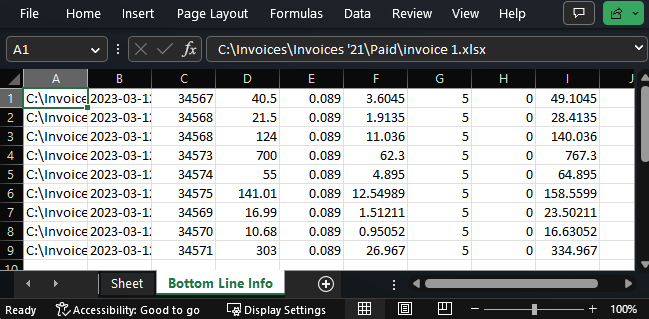

Code
from openpyxl import load_workbook
import openpyxl as pyxl
from pathlib import Path
import os
from datetime import datetimeDavid De Sa
March 12, 2023
This article is about using Python to reach into many excel files that have a similar spreadsheet structure so as to pull out data from those sheets, potentially spread across multiple folders, into one place for aggregate use.
It seems like an all too common tragedy that lots of team operate on the basis of sheets that were thrown together at some point in the distant past with varying degrees of thought put into future use cases. Now here you are, with the data you need like gold ore entombed in mountains of excel sheets. The irretrievable Excalibur in the stone.
I encountered a problem where I had hundreds of excel sheets (each for a specific week) with data tables in each, and I needed to know which records in them met a certain criteria. I made some code in Python to pull the data out, this article will walk through it along with the video:
This code goes over all excel files with a name matching a specified pattern in a given folder (and its subfolders). In this example, these are invoices. The code will generate two master data tables in a new worksheet, one table with a row for each line item across all invoices, and another table with one row for each invoice with the bottom line information.
This article is aimed at people who may have never used Python before but have some experience with coding of one form or another; I’ll go through each line so you can understand and customize the code to your own use case. This is built on an assumption that the many sheets you want to dig into have at least some rhyme/reason as to their naming conventions, and internal sheet structure. Anything is possible with programming, but the more consistent your sheets, the simpler this code can be.
If you want to run it yourself, you can find the code on my GitHub page. You’ll need to install Python and Jupyter.2 Python is the programming langauge we’re using, Jupyter is the tool for organizing and executing blocks of Python commands so that we can understand, debug, and execute bits and peices of code at a time instead of always running the whole thing.
I’m using an invoice template I picked up from this website.3
I have a master Invoice folder, with sub folders for each year. To simulate rela world messiness, some of these subfolders have different name patterns, and some have “Paid” vs “Unpaid” secondary folders wheres as some do not.



The opensource tools from Openpyxl are what make this possible. Big thanks to everyone who has built them up. Other than that we’re just using really standard Python libraries4.
The most common thing I tripped over in making this was typos and what not in my file paths. You can use this function to test whether or not a path you’ve entered is valid.
I made code blocks for 2 options; specifying all files manually, or specifying a directory and file name pattern to search for. Either way we start by initializing the container that our data will be stored in:
The most controlled way would be to list all the files with the full path, something like this:
fls.append(r"C:\Invoices\Invoices 2022\Invoice 1.xlsx")But I felt it was such an eyesore, and the folder structure made me prone to typo mistakes. So I made a helper function that would tighten things up, requiring only the file name and invoice year, and ‘paid’ vs ‘unpaid’ as input, and then spitting out the whole file path. The function uses the file year to decide which folder naming structure to use.
# Helper function to build path strings when iterating through multiple files
def pthBld(flNm, flExtn="", path_building_variable=('Paid', 0)):
"""Take a file name and expected file type, and based on some other input, add the rest of the file path for reference by workbook opening function"""
if flExtn != "":
flExtn = "."+flExtn
tp = path_building_variable[0]
yr = path_building_variable[1]
if yr == 22:
return (r"C:\Invoices\Invoices 2022"+chr(92)+tp+chr(92)+flNm+flExtn)
else:
return (r"C:\Invoices\Invoices '"+str(yr)+chr(92)+tp+chr(92)+flNm+flExtn)Always good to test a function is working after making it.
('C:\\Invoices\\Invoices 2022\\unPaid\\Invoice 3.xlsx', 'Exists?: True')Then, the process of specifying all the files to search by individual names is just running a bunch of commands like this:
If there are too many files names to sepcify one by one, or if there is some identifying pattern to the file names of interest, this option can be used. The code looked through the specified folder in entirety, including subfolders, and if a file name meets a criteria, saves the path to perform the data retrieval on that file.
def list_dir(directory):
"""This function will print out the path for every file in the specified directory (and any further nested directories)"""
output = [] # initialize
for filename in os.listdir(directory):
f = os.path.join(directory, filename)
# checking if it is a file
if os.path.isfile(f):
output.append(f)
elif os.path.isdir(f):
output.extend(list_dir(f))
return outputWhat if you wanted to omit one or multiple folders entirely? The ‘else if’ branch in the above function could have an extra required condition added to it such that only folders with a certain name structure, for example, are searched.
Here is what we get when we test that function:
['C:\\Invoices\\Aggregated_Data.xlsx',
"C:\\Invoices\\Invoices '21\\junk_Data.xlsx",
"C:\\Invoices\\Invoices '21\\Paid\\invoice 1.xlsx",
"C:\\Invoices\\Invoices '21\\Paid\\invoice 2.xlsx",
"C:\\Invoices\\Invoices '21\\Unpaid\\invoice 3.xlsx",
"C:\\Invoices\\Invoices '23\\invoice 1.xlsx",
"C:\\Invoices\\Invoices '23\\invoice 2.xlsx",
"C:\\Invoices\\Invoices '23\\invoice 3.xlsx",
"C:\\Invoices\\Invoices '23\\junk_Data.xlsx",
'C:\\Invoices\\Invoices 2022\\junk_Data.xlsx',
'C:\\Invoices\\Invoices 2022\\Paid\\invoice 1.xlsx',
'C:\\Invoices\\Invoices 2022\\Paid\\invoice 2.xlsx',
'C:\\Invoices\\Invoices 2022\\Paid\\junk_Data.xlsx',
'C:\\Invoices\\Invoices 2022\\Unpaid\\invoice 3.xlsx']Having a list of all files within the directory, we need to screen for just the ones we want. For the sake of this example I simply keep the file paths that have the text “invoice” in the last 15 characters of the path:
And testing the output is as expected;
["C:\\Invoices\\Invoices '21\\Paid\\invoice 1.xlsx",
"C:\\Invoices\\Invoices '21\\Paid\\invoice 2.xlsx",
"C:\\Invoices\\Invoices '21\\Unpaid\\invoice 3.xlsx",
"C:\\Invoices\\Invoices '23\\invoice 1.xlsx",
"C:\\Invoices\\Invoices '23\\invoice 2.xlsx",
"C:\\Invoices\\Invoices '23\\invoice 3.xlsx",
'C:\\Invoices\\Invoices 2022\\Paid\\invoice 1.xlsx',
'C:\\Invoices\\Invoices 2022\\Paid\\invoice 2.xlsx',
'C:\\Invoices\\Invoices 2022\\Unpaid\\invoice 3.xlsx']We got rid of the junk_data.xlsx files.
Having specified all the files paths for our excel files, we need to reach into them and grab that data into memory using Python. To do that, we iterate over the list of filepaths, opening the workbook using openpyxl. In this example I’m grabbing all data in each item row of the invoice to one table, and the bottom-line information to a second table. For the first operation, I iterate through the cells in which I know the data could be, just recording something if data is found. I use a list comprehension to carry out the workbook.cell(row,col).value function in one line of code but across all columns of the table, casting the date value to a string so that python doesn’t convert it to a more complex datetime format which is admittedly more handy for anything but transferring back into excel.
In the second portion of the retrieval function for a given file, I use a more verbose and explicit way of grabbing all the data. There isn’t any question for these data as to whether or nto they will be there, since each invoice has one of these data points, where as number of line items was variable.
While iterating over the various workbooks, the data from each is stored in 2 lists. Each list is sent to a list of lists which will be used for reporting.
for fl in fls:
wb = load_workbook(filename=fl, data_only=True)
# First record data for the sub-items list
print(str(1+fls.index(fl))+chr(92)+str(len(fls)), fl)
for i in range(8, 30): # Note arbitrary assumption on row limit. Starting point from existing sheet structure
# Grab invoice admin data
if wb['Commercial Invoice'].cell(row=i, column=3).value != None:
data = [fl] # include filepath in data dump
# Invoice number to data dump
data.append(wb['Commercial Invoice'].cell(row=3, column=8).value)
data.extend([wb['Commercial Invoice'].cell(row=i, column=c).value if type(wb['Commercial Invoice'].cell(row=i, column=c).value) != datetime else str(
wb['Commercial Invoice'].cell(row=i, column=c).value) for c in range(2, 9)]) # Convert any data to string.. when re printed to excel it will cast to appropriate type
subitems.append(data)
else:
pass
# Now record to totals
data2 = [fl] # initialize with filepath
data2.append(str(wb['Commercial Invoice'].cell(
row=4, column=8).value)) # invoice data
data2.append(wb['Commercial Invoice'].cell(
row=3, column=8).value) # invoice num
data2.append(wb['Commercial Invoice'].cell(
row=13, column=8).value) # subtotal
data2.append(wb['Commercial Invoice'].cell(row=14, column=8).value) # VAT
data2.append(wb['Commercial Invoice'].cell(
row=15, column=8).value) # Other Tax
data2.append(wb['Commercial Invoice'].cell(
row=16, column=8).value) # Delivery
data2.append(wb['Commercial Invoice'].cell(
row=17, column=8).value) # Deposit Recieved
data2.append(wb['Commercial Invoice'].cell(
row=18, column=8).value) # Total
invoiceTotal.append(data2)1\9 C:\Invoices\Invoices '21\Paid\invoice 1.xlsx2\9 C:\Invoices\Invoices '21\Paid\invoice 2.xlsx
3\9 C:\Invoices\Invoices '21\Unpaid\invoice 3.xlsx
4\9 C:\Invoices\Invoices '23\invoice 1.xlsx5\9 C:\Invoices\Invoices '23\invoice 2.xlsx6\9 C:\Invoices\Invoices '23\invoice 3.xlsx
7\9 C:\Invoices\Invoices 2022\Paid\invoice 1.xlsx
8\9 C:\Invoices\Invoices 2022\Paid\invoice 2.xlsx9\9 C:\Invoices\Invoices 2022\Unpaid\invoice 3.xlsxAs always, good to test that it worked. here we can see how many dsub items in total we observed across all invoices and see a sample of the first one. Likewise for the number of quotes overall, and a sample of the bottom line info collected.
(9,
["C:\\Invoices\\Invoices '21\\Paid\\invoice 1.xlsx",
34567,
'2023-03-12 00:00:00',
789807,
'Wooden Blocks',
6,
7,
1.5,
40.5],
9,
["C:\\Invoices\\Invoices '21\\Paid\\invoice 1.xlsx",
'2023-03-12 00:00:00',
34567,
40.5,
0.089,
3.6045,
5,
0,
49.1045])So, having all of the data we want in memory in Python, we just need to print it to an Excel table. First we open a new table, then, using simple iterating indexes for row and column print-out references to avoid issues with duplicate invoice entries, we iterate through the recorded data and print it out to a worksheet cell. A new sheet is created for the Bottom Line Info and the same process executed, and the workbook saved.
# Finally, print our aggregated data to a single subitems table
wb = pyxl.Workbook()
ws = wb.active
r = 0
for row in subitems:
r = r+1
c = 0
for index in range(len(row)):
c = c+1
ws.cell(row=r, column=c).value = row[index]
wb.create_sheet('Bottom Line Info')
ws = wb['Bottom Line Info']
r = 0
for row in invoiceTotal:
r = r+1
c = 0
for index in range(len(row)):
c = c+1
ws.cell(row=r, column=c).value = row[index]
wb.save(r"C:\Invoices\Aggregated_Data.xlsx")
wb.close()And huzzah! The file appears;

Taking a look at the contents, we can see the plain data laid out. Knowing how we got it, we can manually add the titles and format as a table for sorting and filtering (although this could’ve been done with openpyxl as well!)

I hope that you see the same potential as I did when I first really cracked open this openpyxl tool. It is so liberating to understand that we can use python to get into the guts of excel. Taken to the nth degree, you can really make excel dance with this toolset. The way I look at it is that Excel really just becomes the user-friendly GUI for whatever in the world we want to program, the upper limit on complexity really just being what we can think up and program. In that vein, I’ve put together nother project I hope to share sometime soon.
Another thought is as to what else we can do in the world integrating python with our ubiquitous MS Office tools! As foor for thought, here is a blog post showing how we can create and peer into Word documents using Python. I can imagine this being useful for finding a document we know is hiding somewhere in a huge directory by having the code crawl the whole directory, opening word files and performing a key word search on them.
Don’t worry I didnt spend too long thinking about this, it just came to me. And if you don’t like it, we agree to disagree.↩︎
Not my video, but I recommend it. It might seem daunting or like overkill, but trust me, it’s the right way to go.↩︎
I’m not affiliated with it.↩︎
A library is a collection of code files defining functions and other kinds of code objects that we can use ourselves and build on. Like a toolbox.↩︎
---
title: "Getting Data From Many Excel Workbooks, with Python"
author: "David De Sa"
date: "2023-03-12"
categories: [python, excel, automation]
format:
html:
code-fold: true
toc: true
code-tools: true
image: "Display_pic.png"
---
## TL;DR
This article is about using Python to reach into many excel files that have a similar spreadsheet structure so as to pull out data from those sheets, potentially spread across multiple folders, into one place for aggregate use.
# When your Excel is more like Excalibur ^[Don't worry I didnt spend too long thinking about this, it just came to me. And if you don't like it, we agree to disagree.]
It seems like an all too common tragedy that lots of team operate on the basis of sheets that were thrown together at some point in the distant past with varying degrees of thought put into future use cases. Now here you are, with the data you need like gold ore entombed in mountains of excel sheets. The irretrievable Excalibur in the stone.
I encountered a problem where I had hundreds of excel sheets (each for a specific week) with data tables in each, and I needed to know which records in them met a certain criteria. I made some code in Python to pull the data out, this article will walk through it along with the video:
## What Exactly Does This Code Do?
This code goes over all excel files with a name matching a specified pattern in a given folder (and its subfolders). In this example, these are invoices. The code will generate two master data tables in a new worksheet, one table with a row for each line item across all invoices, and another table with one row for each invoice with the bottom line information.
## Is This For You?
This article is aimed at people who may have never used Python before but have some experience with coding of one form or another; I'll go through each line so you can understand and customize the code to your own use case. This is built on an assumption that the many sheets you want to dig into have at least some rhyme/reason as to their naming conventions, and internal sheet structure. Anything is possible with programming, but the more consistent your sheets, the simpler this code can be.
# INSERT VIDEO LINK HERE, and GITHUB link beloW!
### Try It Yourself!
If you want to run it yourself, you can find the code on my GitHub page. You'll need to [install Python and Jupyter](https://www.youtube.com/watch?v=qI3P7zMMsgY).^[Not my video, but I recommend it. It might seem daunting or like overkill, but trust me, it's the right way to go.] Python is the programming langauge we're using, Jupyter is the tool for organizing and executing blocks of Python commands so that we can understand, debug, and execute bits and peices of code at a time instead of always running the whole thing.
# Code Walkthrough
## Example Files
I'm using an invoice template I picked up from [this website](https://www.myexcelonline.com/blog/free-excel-templates-and-spreadsheets/#section66).^[I'm not affiliated with it.]
I have a master Invoice folder, with sub folders for each year. To simulate rela world messiness, some of these subfolders have different name patterns, and some have "Paid" vs "Unpaid" secondary folders wheres as some do not.
{#fig-f1}
{#fig-f2}
{#fig-f3}
## Dependencies
The opensource tools from [Openpyxl](https://openpyxl.readthedocs.io/en/stable/) are what make this possible. Big thanks to everyone who has built them up. Other than that we're just using really standard Python libraries^[A library is a collection of code files defining functions and other kinds of code objects that we can use ourselves and build on. Like a toolbox.].
```{python}
from openpyxl import load_workbook
import openpyxl as pyxl
from pathlib import Path
import os
from datetime import datetime
```
## Debugging
The most common thing I tripped over in making this was typos and what not in my file paths. You can use this function to test whether or not a path you've entered is valid.
```{python}
Path(r"C:\Invoices").exists()
```
## Specifying Which Files
I made code blocks for 2 options; specifying all files manually, or specifying a directory and file name pattern to search for. Either way we start by initializing the container that our data will be stored in:
```{python}
subitems = [] # Will contain the data we're aggregating for all items on invoices
invoiceTotal = [] # Will contain the final bottom-line data for each invoice
fls = [] # Stores file paths for excel files to be searched
```
### Option 1: Naming Each File
The most controlled way would be to list all the files with the full path, something like this:
```{python}
print("fls.append(r\"C:\Invoices\Invoices 2022\Invoice 1.xlsx\")")
```
But I felt it was such an eyesore, and the folder structure made me prone to typo mistakes. So I made a helper function that would tighten things up, requiring only the file name and invoice year, and 'paid' vs 'unpaid' as input, and then spitting out the whole file path. The function uses the file year to decide which folder naming structure to use.
```{python}
# Helper function to build path strings when iterating through multiple files
def pthBld(flNm, flExtn="", path_building_variable=('Paid', 0)):
"""Take a file name and expected file type, and based on some other input, add the rest of the file path for reference by workbook opening function"""
if flExtn != "":
flExtn = "."+flExtn
tp = path_building_variable[0]
yr = path_building_variable[1]
if yr == 22:
return (r"C:\Invoices\Invoices 2022"+chr(92)+tp+chr(92)+flNm+flExtn)
else:
return (r"C:\Invoices\Invoices '"+str(yr)+chr(92)+tp+chr(92)+flNm+flExtn)
```
Always good to test a function is working after making it.
```{python}
p = pthBld('Invoice 3', "xlsx", ('unPaid', 22))
p, "Exists?: "+str(Path(p).exists())
```
Then, the process of specifying all the files to search by individual names is just running a bunch of commands like this:
```{python}
print("fls.append(pthBld('Invoice 1',\"xlsx\",('Paid',22)))")
```
### Option 2: Full Directory Search on File names
If there are too many files names to sepcify one by one, or if there is some identifying pattern to the file names of interest, this option can be used. The code looked through the specified folder in entirety, including subfolders, and if a file name meets a criteria, saves the path to perform the data retrieval on that file.
```{python}
def list_dir(directory):
"""This function will print out the path for every file in the specified directory (and any further nested directories)"""
output = [] # initialize
for filename in os.listdir(directory):
f = os.path.join(directory, filename)
# checking if it is a file
if os.path.isfile(f):
output.append(f)
elif os.path.isdir(f):
output.extend(list_dir(f))
return output
```
What if you wanted to omit one or multiple folders entirely? The 'else if' branch in the above function could have an extra required condition added to it such that only folders with a certain name structure, for example, are searched.
Here is what we get when we test that function:
```{python}
list_dir(r"C:\Invoices") # Test it works
```
Having a list of *all* files within the directory, we need to screen for just the ones we want. For the sake of this example I simply keep the file paths that have the text "invoice" in the last 15 characters of the path:
```{python}
for f in list_dir(r"C:\Invoices"):
if "invoice" in f.lower()[-15:]:
fls.append(f)
```
And testing the output is as expected;
```{python}
fls
```
We got rid of the junk_data.xlsx files.
## Retrieving The Data
Having specified all the files paths for our excel files, we need to reach into them and grab that data into memory using Python. To do that, we iterate over the list of filepaths, opening the workbook using openpyxl. In this example I'm grabbing all data in each item row of the invoice to one table, and the bottom-line information to a second table. For the first operation, I iterate through the cells in which I know the data could be, just recording something if data is found. I use a list comprehension to carry out the workbook.cell(row,col).value function in one line of code but across all columns of the table, casting the date value to a string so that python doesn't convert it to a more complex datetime format which is admittedly more handy for anything but transferring back into excel.
In the second portion of the retrieval function for a given file, I use a more verbose and explicit way of grabbing all the data. There isn't any question for these data as to whether or nto they will be there, since each invoice has one of these data points, where as number of line items was variable.
While iterating over the various workbooks, the data from each is stored in 2 lists. Each list is sent to a list of lists which will be used for reporting.
```{python}
for fl in fls:
wb = load_workbook(filename=fl, data_only=True)
# First record data for the sub-items list
print(str(1+fls.index(fl))+chr(92)+str(len(fls)), fl)
for i in range(8, 30): # Note arbitrary assumption on row limit. Starting point from existing sheet structure
# Grab invoice admin data
if wb['Commercial Invoice'].cell(row=i, column=3).value != None:
data = [fl] # include filepath in data dump
# Invoice number to data dump
data.append(wb['Commercial Invoice'].cell(row=3, column=8).value)
data.extend([wb['Commercial Invoice'].cell(row=i, column=c).value if type(wb['Commercial Invoice'].cell(row=i, column=c).value) != datetime else str(
wb['Commercial Invoice'].cell(row=i, column=c).value) for c in range(2, 9)]) # Convert any data to string.. when re printed to excel it will cast to appropriate type
subitems.append(data)
else:
pass
# Now record to totals
data2 = [fl] # initialize with filepath
data2.append(str(wb['Commercial Invoice'].cell(
row=4, column=8).value)) # invoice data
data2.append(wb['Commercial Invoice'].cell(
row=3, column=8).value) # invoice num
data2.append(wb['Commercial Invoice'].cell(
row=13, column=8).value) # subtotal
data2.append(wb['Commercial Invoice'].cell(row=14, column=8).value) # VAT
data2.append(wb['Commercial Invoice'].cell(
row=15, column=8).value) # Other Tax
data2.append(wb['Commercial Invoice'].cell(
row=16, column=8).value) # Delivery
data2.append(wb['Commercial Invoice'].cell(
row=17, column=8).value) # Deposit Recieved
data2.append(wb['Commercial Invoice'].cell(
row=18, column=8).value) # Total
invoiceTotal.append(data2)
```
As always, good to test that it worked. here we can see how many dsub items in total we observed across all invoices and see a sample of the first one. Likewise for the number of quotes overall, and a sample of the bottom line info collected.
```{python}
# Check we got what we wanted
len(subitems), subitems[0], len(invoiceTotal), invoiceTotal[0]
```
## Compile In Excel
So, having all of the data we want in memory in Python, we just need to print it to an Excel table. First we open a new table, then, using simple iterating indexes for row and column print-out references to avoid issues with duplicate invoice entries, we iterate through the recorded data and print it out to a worksheet cell. A new sheet is created for the Bottom Line Info and the same process executed, and the workbook saved.
```{python}
# Finally, print our aggregated data to a single subitems table
wb = pyxl.Workbook()
ws = wb.active
r = 0
for row in subitems:
r = r+1
c = 0
for index in range(len(row)):
c = c+1
ws.cell(row=r, column=c).value = row[index]
wb.create_sheet('Bottom Line Info')
ws = wb['Bottom Line Info']
r = 0
for row in invoiceTotal:
r = r+1
c = 0
for index in range(len(row)):
c = c+1
ws.cell(row=r, column=c).value = row[index]
wb.save(r"C:\Invoices\Aggregated_Data.xlsx")
wb.close()
```
And huzzah! The file appears;
{#fig-f4}
## Output
Taking a look at the contents, we can see the plain data laid out. Knowing how we got it, we can manually add the titles and format as a table for sorting and filtering (although this could've been done with openpyxl as well!)
{#fig-f5}
# Afterthoughts
I hope that you see the same potential as I did when I first really cracked open this openpyxl tool. It is so liberating to understand that we can use python to get into the guts of excel. Taken to the nth degree, you can really make excel dance with this toolset. The way I look at it is that Excel really just becomes the user-friendly GUI for whatever in the world we want to program, the upper limit on complexity really just being what we can think up and program. In that vein, I've put together nother project I hope to share sometime soon.
Another thought is as to what else we can do in the world integrating python with our ubiquitous MS Office tools! As foor for thought, here is a [blog post](https://blog.aspose.com/words/python-ms-word-automation-create-edit-or-convert-ms-word-documents-using-python/#Parse-Word-Documents-using-Python) showing how we can create and peer into Word documents using Python. I can imagine this being useful for finding a document we know is hiding somewhere in a huge directory by having the code crawl the whole directory, opening word files and performing a key word search on them.